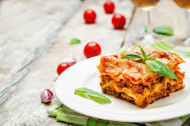

World's Best Lasagna

Description
This is a simple and adaptable recipe by John Chandler, approved by the AllRecipes team, which provides chefs of all experience levels with the knowledge
needed to craft the perfect lasagna.
Ingredients
- 1 lb Sweet Italian Sausage
- 3/4 lb Lean Ground Beef
- 1/2 Cup Minced Onion
- 2 Cloves Crushed Garlic
- 1 Can Crushed Tomatoes
- 2 Cans Tomato Sauce
- 2 Cans Tomato Paste
- 1/2 Cup Water
- 2 Tbsp White Sugar
- 4 Tbsp Chopped Parsley
- 1 1/2 Tsp Dried Basil Leaves
- Salt, to Taste
- 1 Tsp Italian Seasoning
- 1/2 Tsp Fennel Seeds
- 1/4 Tsp Ground Black Pepper
- 12 Lasagna Noodles
- 16 oz Ricotta Cheese
- 1 Egg
- 3/4 lb Sliced Mozzarella
- 3/4 Cup Grated Parmesan
Steps
- Cook sausage, ground beef, onion, and garlic in a Dutch oven over medium heat until well browned.
- Stir in crushed tomatoes, tomato sauce, tomato paste, and water. Season with sugar, 2 tablespoons parsley, basil, 1 teaspoon salt, Italian seasoning, fennel seeds,
and pepper. Simmer, covered, for about 1 ½ hours, stirring occasionally.
- Bring a large pot of lightly salted water to a boil. Cook lasagna noodles in boiling water for 8 to 10 minutes. Drain noodles, and rinse with cold water.
- In a mixing bowl, combine ricotta cheese with egg, remaining 2 tablespoons parsley, and 1/2 teaspoon salt.
- Preheat the oven to 375 degrees F (190 degrees C).
- To assemble, spread 1 ½ cups of meat sauce in the bottom of a 9x13-inch baking dish. Arrange 6 noodles lengthwise over meat sauce, overlapping slightly.
Spread with 1/2 of the ricotta cheese mixture. Top with 1/3 of the mozzarella cheese slices.
Spoon 1 ½ cups meat sauce over mozzarella, and sprinkle with 1/4 cup Parmesan cheese.
- Repeat layers, and top with remaining mozzarella and Parmesan cheese.
Cover with foil: to prevent sticking, either spray foil with cooking spray or make sure the foil does not touch the cheese.
- Bake in the preheated oven for 25 minutes. Remove the foil and bake for an additional 25 minutes.
- Let the lasagna rest for 15 minutes before serving.
Home